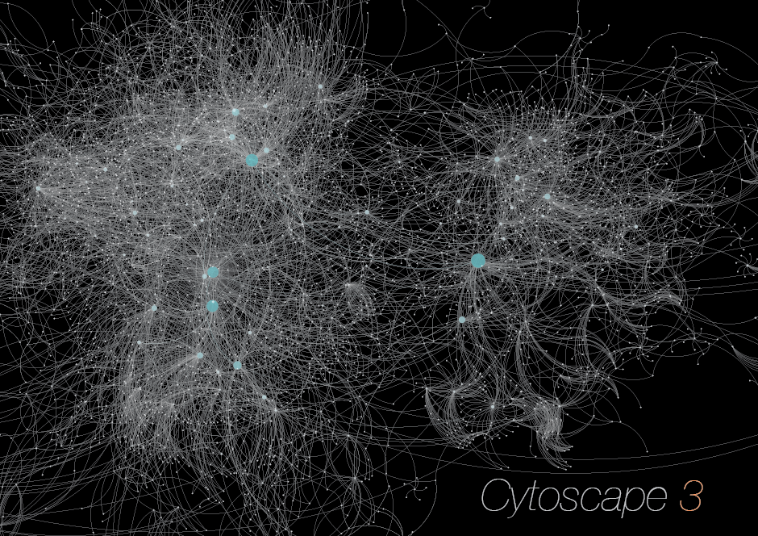
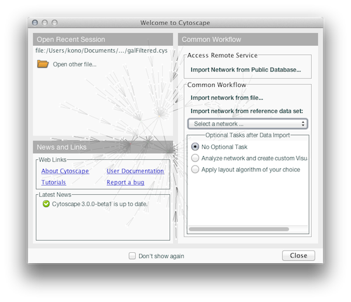
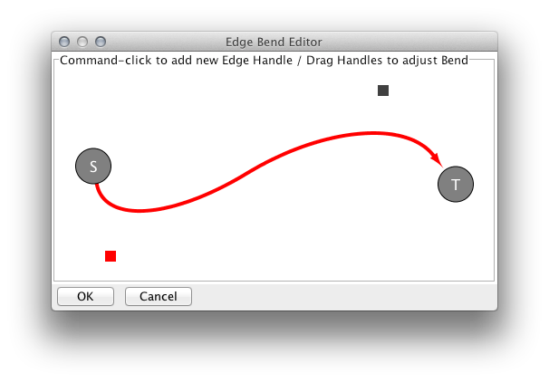
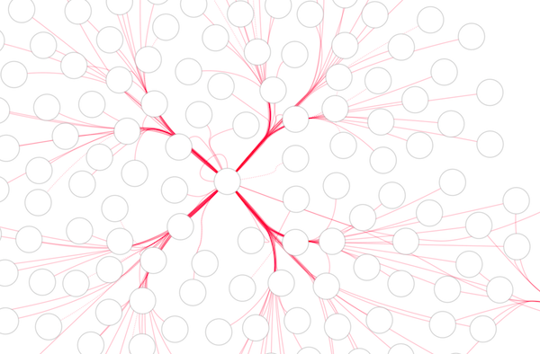
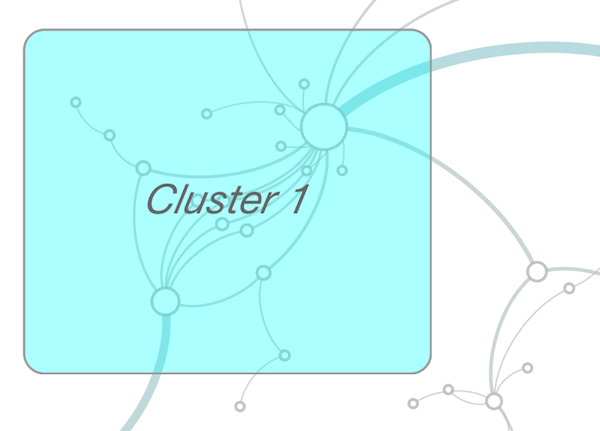
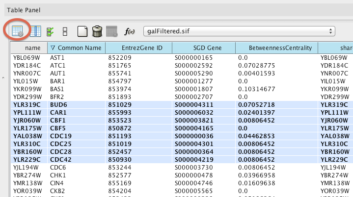
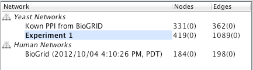

New Features in Cytoscape 3

Updated Welcome Screen
For convenience, Cytoscape shows Welcome Screen at
startup timewhich provides easy way to access sample data sets and public databases.

Edge Bend Visual Property
Edge Bend is now a standard Visual Property.
You can use it as a part of your Visual Style.

Edge Bundling
You can bundle edges by automatic Edge Bundling.
This feature is useful for dense network views.

Network Annotations
You can add notes and simple shapes to background or foreground of network view.
Advanced Search Function
From this version, EnhancedSearch plugin is part of core.
You can search networks using Lucene syntax.

Show All feature in Data Table Browser
By selecting Show All option in Data Table Browser,
you can display all network objects in the
table. Nodes and edges will be selected when you select
associated rows in the table.

Network Collection
Cytoscape 3 manages networks based on Network Collection.
When you load networks to Cytoscape, you can choose
creating a new set of networks or adding them to existing collection.
User Manual
User manual for Cytoscape 3 is available
here.
Known Issues
Java Versions
You can run Cytoscape 3 on Java 6 or 7. However, there are several problems if you use
OpenJDK. Please use Oracle JRE/JDK or Apple Java Virtual Machine.
Windows XP Problems
You need to run gen_vmoptions.bat file before you run Cytoscape 3.
Cytoscpae 3 supports up to 800M of memory for XP platforms.
Important Note for Mac Users
If you run Cytoscape on Mac OS X 10.7.5+ and 10.8+, you need to disable Gatekeeper
before running the installer.
How to Report Bugs
Your bug reports are very important
to improve quality of future versions of Cytoscape 3. If you notice any problems,
please report them from:
Help → Report a bug...
Need Help?
We need your feedback to improve Cytoscape 3! Please send your questions and comments
to our
mailing list.